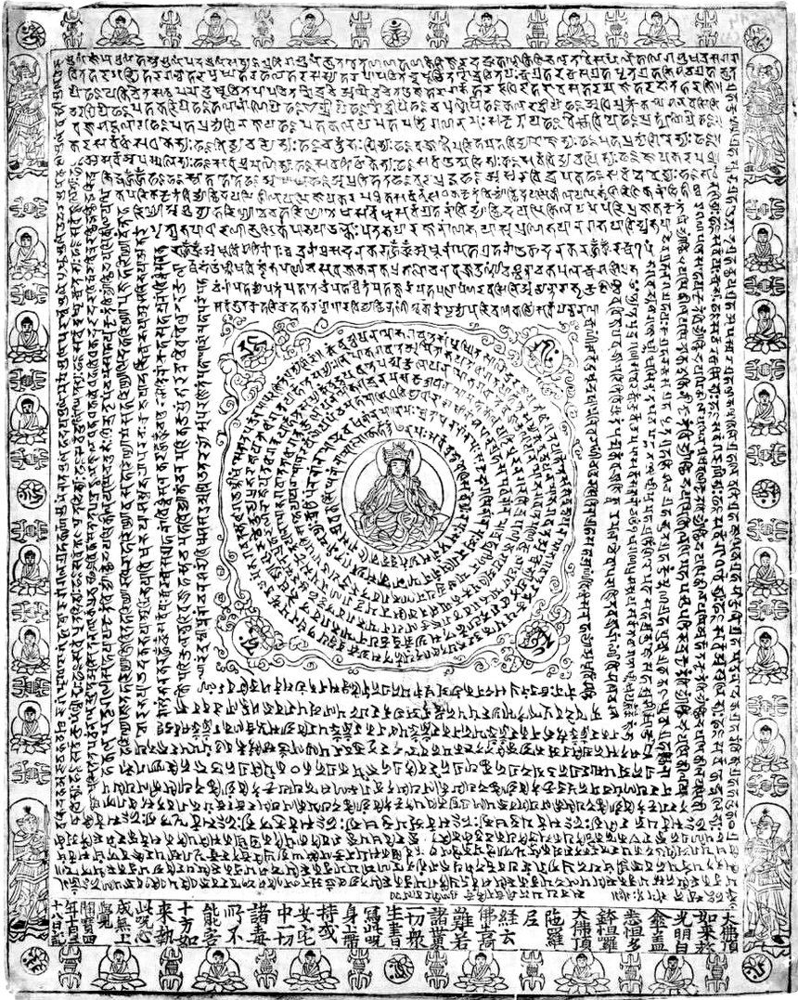
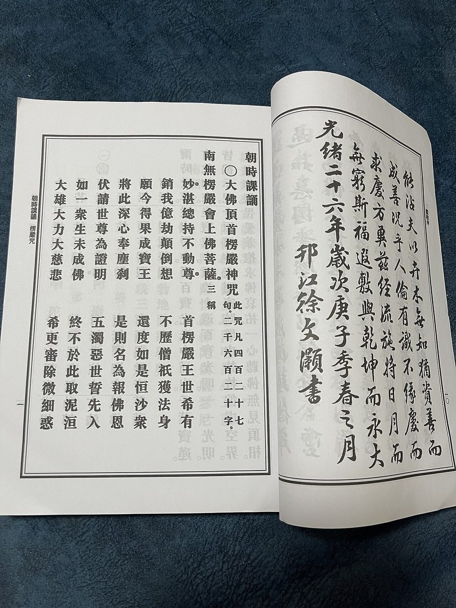

这是一份"讽诵调"谱，不是某座寺院传承的唱腔。汉传佛教给咒语"谱曲"的传统，从来不是给每个字写独立旋律，而是用一套 五声音阶吟唱公式循环套用——这也是为什么同一部楞严咒，天宁寺、金山寺、昭觉寺唱起来味儿不同却都"对"。本谱采用 C 大调五声音阶（宫 1 · 商 2 · 角 3 · 徵 5 · 羽 6），五会各配一种心境色彩与旋律轮廓：
简谱中无点的数字＝中音，数字上方加虚点＝高八度（见下方图例）。每句末字自动拖长并落于稳定音，句间有气口，会间留长呼吸。 点"▶ 播放"即可听合成吟唱（钟磬般柔和的音色 + 余韵混响）。诵持时请以你师父所传为准，此谱仅供理解与自修参考。咒文依《大正藏》本《楞严经》卷七，诸本小异处从常见流通本。
各会音乐频率区间（Hz）：本谱采用 C 大调五声音阶、整体上移八度（自 C5 起），实际发声频率如下——
· 第一会、第二会（reg 最低音区）：C5 组，约 523–880 Hz（宫 523.25 / 商 587.33 / 角 659.25 / 徵 784.00 / 羽 880.00）；
· 第三会、第四会、第五会、咒心（reg 高八度）：C6 组，约 1046–1760 Hz（上述各音 ×2）。
因此全咒最低音区落在第一会（C5）、最高音区落在第五会与咒心（C6），形成「第一会最低、第五会最高」的层次对比；手机 / 笔记本扬声器在此频段能量充足，可清晰听到。
播放引擎（V3.0 · 实时调度）：点「▶ 播放」即刻出声，无需等待渲染。采用标准的 lookahead 预调度——定时器每 250ms 醒来一次，只把未来 2 秒内该响的音符挂到音频时钟上， 由音频硬件时钟精确发声；混响器全程只建一个、常驻复用。内存占用恒定（约几十 KB）， 全咒 23 分钟也不会变慢或卡死。速度、音量、段落切换全部实时生效。
注音说明（V3.1）：每个字的拼音依汉传通行梵呗读音标注，并对咒中大量异读字做了人工校订 （如 南无 nā mó、他 tuō、伽 qié、啰 là、阇 shé、跢 duō、鞞 pí、般 bō、若 rě、刹 chà、么 mó）。 咒语古来音译用字，各家读音本有出入，诵持仍请以师承为准。面板右侧可用「注音」「简谱」开关分别显隐。
